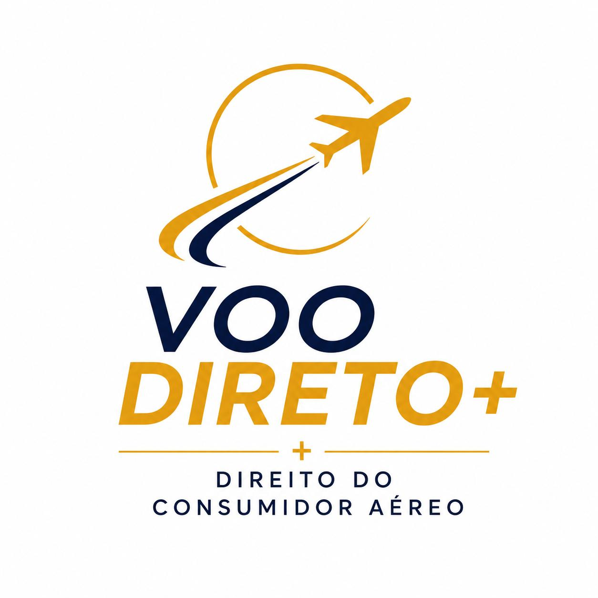

Receba até R$ 10.000,00 de Indenização por Problemas com Seu Voo
A legislação brasileira e a ANAC protegem o passageiro. Descubra gratuitamente em menos de 1 minuto se o seu voo é elegível a uma compensação financeira por danos morais e materiais, com Risco Zero.
R$ 0,00
Custo Inicial (Só Paga se Ganhar)
+3 Milhões
Passageiros com Direitos Assegurados
100% Online
Sem Audiências ou Burocracia
- Voo remarcado com mais de 4h gera Dano Moral
- Overbooking garante PIX de até R$ 3.600 na hora
- Mala extraviada garante reembolso de compras
Calcule se Seu Voo Tem Direito a Indenização
Descubra em menos de 1 minuto quanto você pode receber por transtornos em seu voo.
1. De onde e para onde você viajou?

Defesa Intransigente dos Seus Direitos Contra os Abusos das Companhias Aéreas
As companhias aéreas cancelam e atrasam voos diariamente, lucram bilhões e muitas vezes deixam os passageiros sem assistência adequada. Nossa missão é restabelecer a dignidade de quem viaja, buscando as reparações financeiras mais justas e integrais pela via extrajudicial ou judicial.
O Que Fazer no Aeroporto Agora?
Seu voo atrasou, foi cancelado, você foi impedido de embarcar ou sua mala não chegou? Selecione a sua situação abaixo e veja o que exigir no balcão da companhia aérea imediatamente:
Voo Atrasado ou Cancelado
Chegada com 2h, 4h ou mais de atraso, cancelamento ou perda de conexões.
Overbooking (Preterição)
Voo superlotado e você foi impedido de embarcar involuntariamente.
Mala Extraviada ou Danificada
Bagagem sumiu da esteira, foi violada ou sofreu avarias no transporte.

💡 Respire fundo: quem vai te atender não é o culpado — seu direito é com a companhia, não com o funcionário.
1 NÃO DISCUTA, NÃO GRITE: REGISTRE. QUEM REGISTRA, PROVA!
Mantenha a calma e reúna todas as provas visuais do transtorno ainda no aeroporto:
- Tire foto nítida do painel de embarque mostrando o voo como atrasado ou cancelado.
- Fotografe as filas no balcão e faça pequenos vídeos mostrando o tumulto e a falta de assistência.
- Guarde e fotografe TODAS as notas fiscais de gastos com alimentação, transporte, água e remédios.
- Tire foto da hora exata do embarque e do avião decolando com o relógio ou celular indicando o horário real.
2 EXIJA A DECLARAÇÃO DE CONTINGÊNCIA
Vá até o balcão da companhia aérea e solicite a Declaração de Contingência. Trata-se da declaração formal por escrito informando o motivo e o horário real do atraso ou cancelamento. A companhia tem obrigação de fornecer e já possui formulários prontos para isso.
“A [Companhia Aérea] declara para os devidos fins que o voo [Número], com rota [Origem] para [Destino], com partida originalmente programada para [Data e Hora], sofreu atraso/cancelamento por motivos operacionais/técnicos, decolando às [Novo Horário]. Atendimento registrado sob protocolo [Número].”
3 COMPROVAÇÃO DE PERDA DE COMPROMISSO (AUMENTE SEU DANO MORAL)
Se o atraso fez você perder reuniões, diárias de hotel, passeios pagos ou consultas, comprove isso imediatamente. Ainda no aeroporto, envie um e-mail formal desmarcando o compromisso:
Assunto: [URGENTE] Cancelamento/adiamento da reunião de [data] — atraso de voo Prezado(a) [Nome], Infelizmente, preciso adiar nossa reunião prevista para hoje, [data], às [horário]. Meu voo [número do voo], da companhia aérea [nome da companhia], com partida de [origem] às [horário] e chegada prevista em [destino], foi [atrasado/cancelado], e não cheguei a tempo em [cidade]. Dessa forma, não terei condições de comparecer ao compromisso no horário combinado. Peço desculpas pelo transtorno e proponho remarcarmos para [sugestão de nova data/horário]. Fico à disposição para confirmarmos a nova data. Atenciosamente, [Seu Nome Completo]
4 SEUS DIREITOS POR TEMPO DE ATRASO (RESOLUÇÃO 400 ANAC)
⏳ Atraso Superior a 2 Horas:
Direitos obrigatórios da companhia:
- Comunicação gratuita (internet e ligações) — desde 1 hora de espera.
- Alimentação gratuita (voucher ou refeição) — a partir de 2 horas de espera.
"Meu voo [número] de [origem] para [destino], previsto para [horário], está atrasado há mais de 2 horas. Solicito a assistência material obrigatória: comunicação e voucher de alimentação, além da minha declaração de contingência."
⏳ Atraso Superior a 4 Horas:
Direitos obrigatórios da companhia:
- Vouchers de alimentação e bebidas adequadas.
- Hospedagem em hotel + transporte ida e volta até o aeroporto (quando for necessário pernoite).
- Direito de escolha: Reembolso integral do valor da passagem OU Reacomodação no próximo voo (mesmo que de outra companhia aérea) OU Execução por outro meio de transporte.
"Meu voo [número] de [origem] para [destino], previsto para [horário], está atrasado há mais de 4 horas. Solicito a assistência obrigatória: comunicação, alimentação e, como precisarei pernoitar, hospedagem e transporte. Exijo escolher entre reacomodação na primeira oportunidade (inclusive de outra companhia aérea) ou reembolso, e peço a declaração por escrito do atraso com o protocolo de atendimento."
ATENÇÃO: NÃO ASSINE NADA COM "QUITAÇÃO TOTAL"!
Cuidado com formulários ou recibos oferecidos pela companhia aérea que contenham termos como "quitação ampla, geral e irrestrita". Receber o lanche, a hospedagem ou mesmo a remarcação de voo NÃO impede você de buscar indenização de até R$ 10.000 na Justiça pelos transtornos. Só assine recibos de recebimento do voucher simples — ou chame nossa assessoria jurídica antes de assinar.

💡 Voo lotou? NÃO ACEITE VOUCHER DE 300 REAIS. A lei manda pagar em dinheiro na hora!
1 O QUE É A COMPENSAÇÃO FINANCEIRA IMEDIATA (ART. 24 DA ANAC)
Quando a companhia vende mais passagens do que a capacidade do avião (overbooking) e te impede de embarcar involuntariamente, ela TEM QUE PAGAR COMPENSAÇÃO FINANCEIRA IMEDIATA NO BALCÃO:
"Art. 24. No caso de preterição, o transportador deverá efetuar, imediatamente, o pagamento de compensação financeira ao passageiro, podendo ser por transferência bancária, voucher ou em espécie, no valor de:
I – 250 (duzentos e cinquenta) DES, no caso de voo doméstico;
II – 500 (quinhentos) DES, no caso de voo internacional."
Quanto Você Tem Direito a Receber NA HORA no Balcão:
"Fui preterido no voo [número], de [origem] para [destino], com bilhete e cartão válidos. Exijo a Declaração de Preterição de Embarque por escrito e o pagamento imediato da compensação do Art. 24 da Resolução 400 da ANAC: 250 DES para voo nacional ou 500 DES para voo internacional via PIX/transferência na hora, além da reacomodação no próximo voo e voucher de alimentação."
2 EXIJA A DECLARAÇÃO DE PRETERIÇÃO DE EMBARQUE
Peça a declaração formal da companhia comprovando que você compareceu no horário e foi impedido de embarcar por falta de assentos. Confira se o documento possui o seguinte teor:
“A [Companhia Aérea], inscrita no CNPJ sob o nº [CNPJ], declara que o passageiro [Seu Nome Completo], titular do bilhete [Número], foi impedido de embarcar no voo [Número], rota [Origem]–[Destino], programado para [Data/Hora], por preterição de embarque involuntária (overbooking). Protocolo: [Número].”
3 E SE A COMPANHIA PEDIR VOLUNTÁRIOS?
A companhia é obrigada a procurar passageiros voluntários antes de barrar alguém. Cuidado: se você aceitar voluntariamente qualquer voucher pequeno de R$ 300 ou R$ 500, você abre mão do direito automático aos R$ 1.800 imediatos do art. 24. Só aceite se a companhia oferecer valores muito superiores e com hotel e próximo voo garantidos por escrito.
4 RECEBER O DINHEIRO NO BALCÃO NÃO ANULA SEU DANO MORAL NA JUSTIÇA
O pagamento de R$ 1.800 ou R$ 3.600 no balcão é uma penalidade administrativa obrigatória da ANAC. Você ainda pode entrar com ação judicial para buscar indenização por Danos Morais e Prejuízos Materiais adicionais pelo estresse, perda de compromissos e diárias de viagem!
ATENÇÃO AO RECIBO DO PIX: NÃO ASSINE QUITAÇÃO GERAL!
Ao receber o PIX da compensação imediata, o recibo deve mencionar EXCLUSIVAMENTE a quitação da compensação do Art. 24 da Resolução 400. Jamais assine termos que digam que você "renuncia a ações judiciais futuras".

💡 Sua mala não apareceu na esteira? NÃO ACEITE "vai aparecer amanhã" sem o papel assinado!
1 PEÇA O RIB (RELATÓRIO DE IRREGULARIDADE DE BAGAGEM) NA HORA!
O RIB (chamado internacionalmente de PIR - Property Irregularity Report) é a prova rainha do extravio. Sem ele, a companhia aérea alega que você retirou sua mala normalmente. Não saia da sala de desembarque sem a sua via do RIB carimbada e assinada pelo funcionário.
Na hora de preencher os campos do RIB, DESCREVA TUDO O QUE VOCÊ LEMBRAR QUE ESTAVA DENTRO DA MALA COM O MÁXIMO DE DETALHES E MARCAS. Exemplo: "4 calças jeans Levi's, 2 pares de tênis Nike, carregador original, 5 camisas, cosméticos, perfume importado e casaco de couro".
2 RESSARCIMENTO DE GASTOS DE EMERGÊNCIA (ART. 33 DA ANAC)
Enquanto você estiver sem sua mala fora do seu domicílio, a companhia aérea é obrigada a pagar despesas emergenciais de roupas, produtos de higiene pessoal e medicamentos necessários:
- Compre itens essenciais para passar os dias e guarde rigorosamente todas as notas fiscais (tire fotos imediatas dos comprovantes).
- O ressarcimento deve ser realizado pela companhia em até 7 dias após a apresentação dos comprovantes.
3 PRAZOS LEGAIS PARA LOCALIZAÇÃO DA BAGAGEM
- Voo Nacional: A empresa aérea tem até 7 dias para localizar e entregar sua mala em seu endereço.
- Voo Internacional: O prazo é de até 21 dias.
- Se ultrapassar o prazo: É considerado extravio definitivo, gerando dever de indenização integral dos pertences + Danos Morais na Justiça.
- Mala Danificada ou Violada: Faça o protesto no balcão em até 7 dias após o recebimento.
"Minha bagagem despachada no voo [número], de [origem] para [destino], não foi restituída na esteira. Solicito a abertura imediata do RIB por escrito com o número do protocolo, o comprovante com a lista dos itens declarados e a assistência para cobertura de gastos de emergência conforme o Art. 33 da Resolução 400 da ANAC."
CUIDADO AO RECEBER A MALA ATRASADA: NÃO DÊ QUITAÇÃO TOTAL!
Quando a mala for entregue na sua casa ou hotel dias depois, verifique se está rasgada, com o cadeado violado ou se faltam objetos. Ao assinar o comprovante de entrega, escreva ao lado da sua assinatura: "Recebido com atraso de X dias, sob reserva de conferência dos pertences internos". Ficar dias sem suas roupas gera dano moral garantido!
Mais de 3 Milhões de Passageiros Já Tiveram Seus Direitos Assegurados e Receberam Indenização
Conheça relatos de quem não aceitou o prejuízo das companhias aéreas e recuperou seu dinheiro com nossa assistência jurídica especializada. Arraste para o lado para navegar:
"Meu voo para Lisboa foi cancelado sem aviso e cheguei 18 horas depois, perdendo o primeiro dia de férias. Achei que seria impossível resolver, mas a equipe cuidou de tudo de forma 100% digital. Recebi a indenização sem pisar num fórum!"

"Minha mala com pertences e roupas de trabalho sumiu numa viagem a trabalho para Recife e só entregaram 8 dias depois. Segui as orientações do balcão pelo site, guardei o RIB e os especialistas conseguiram indenização máxima por Danos Morais!"

"Fui barrado no portão em Congonhas por overbooking. Com a minuta do site, exigi os R$ 1.800 na hora no balcão e depois entramos com o pedido judicial pelos transtornos. Foi a melhor decisão, atendimento impecável!"

"Perdemos nossa conexão para Miami por atraso no trecho inicial de Curitiba. Ficamos desamparados no saguão de madrugada sem hotel. O suporte jurídico foi rápido, humano e conquistou a justiça que merecíamos."

"Minha avó é idosa e ficou 7 horas sentada no chão sem que dessem sequer uma garrafa de água durante um cancelamento da Azul. O respeito com que nos atenderam e a indenização que conseguiram trouxeram alívio à nossa família."

Quanto Você Pode Receber por Voo Atrasado ou Cancelado?
Os valores de indenização são balizados pela distância percorrida da rota, tempo de atraso na chegada e gravidade do dano moral suportado. Explore o quadro interativo abaixo:
Até 1.500 km
Exemplos: Rio de Janeiro ➔ São Paulo, Curitiba ➔ Porto Alegre, Belo Horizonte ➔ Brasília
Até R$ 1.200,00
+ Danos Morais de até R$ 5.000 a R$ 8.000- Atrasos acima de 4 horas no destino
- Alimentação obrigatória após 2 horas
- Reacomodação imediata no próximo voo
- Hotel com translado em caso de pernoite
De 1.500 a 3.500 km
Exemplos: São Paulo ➔ Fortaleza, Salvador ➔ Manaus, Rio ➔ Buenos Aires ou Santiago
Até R$ 2.000,00
+ Danos Morais de até R$ 8.000 a R$ 10.000- Perda de conexões críticas
- Ressarcimento de diárias de hospedagem perdidas
- Cancelamento sem aviso de 72 horas
- Indenização por estresse e constrangimento
Mais de 3.500 km
Exemplos: Brasil ➔ Estados Unidos (Miami/NY), Europa (Lisboa/Paris), Caribe ou Ásia
Até R$ 3.500,00
+ Danos Morais podendo atingir até R$ 10.000 a R$ 12.000- Convenção de Montreal + Código de Defesa do Consumidor
- Compensação internacional por extravio de bagagem
- Reembolso integral de gastos de sobrevivência
- Alta jurisprudência em tribunais brasileiros
Teste a Distância do Seu Voo no Slider Interativo
Arraste a barra abaixo para visualizar o cálculo estimado de acordo com a distância do seu trecho aéreo:
Como Funciona o Resgate da Sua Indenização?
Processo simples, rápido e 100% digital. Você não precisa enfrentar filas nem comparecer a audiências:
1. Simulação Online Gratuita
Você informa os dados do voo no nosso simulador em menos de 1 minuto e descobre imediatamente a viabilidade jurídica do seu pedido.
2. Envio Digital de Fotos
Basta tirar foto do seu bilhete de embarque, recibos e e-mails pelo próprio WhatsApp. Se não tiver os bilhetes, ajudamos a resgatar.
3. Atuação Especializada
Nossos advogados especializados em Direito Aeronáutico notificam a companhia aérea e cobram o valor justo por acordo ou via judicial.
4. Dinheiro Direto na Sua Conta
A indenização conquistada é creditada diretamente na sua conta bancária via PIX ou TED. Você só comemora a justiça feita!
Principais Situações com Direito a Indenização
Se você passou por qualquer um dos transtornos abaixo nos últimos 5 anos, você pode receber indenização financeira:
Atraso de Voo Superior a 4 Horas
Chegar ao destino final com 4 horas ou mais de atraso gera direito a compensação por danos morais presumidos e ressarcimento de perdas de compromissos.
Art. 20, Resolução 400 ANACVoo Cancelado sem Aviso Prévio
A empresa tem obrigação de avisar alterações com pelo menos 72 horas de antecedência. Não havendo aviso, a reacomodação e o dano moral são exigíveis.
Art. 12, Resolução 400 ANACOverbooking (Preterição de Embarque)
Quando a companhia vende mais assentos do que a capacidade da aeronave e impede seu embarque. Dá direito a PIX imediato no balcão e indenização na Justiça.
Art. 24, Resolução 400 ANACBagagem Extraviada ou Danificada
Ficar sem suas roupas fora de casa ou ter sua mala quebrada dá direito ao pagamento de compras de emergência e indenização por danos materiais e morais.
Art. 32 e 33, ANAC & MontrealPerda de Voo de Conexão
Se o primeiro trecho atrasou e fez você perder o voo seguinte, a companhia deve bancar hotel, transporte e alimentação, além de indenizar o estresse gerado.
Código de Defesa do ConsumidorFalta de Assistência Material
Esperar horas no aeroporto sem voucher para almoço, jantar, água ou hotel durante a madrugada configura negligência com indenização ampliada.
Art. 26 e 27, Resolução 400 ANACPerguntas Frequentes dos Passageiros
Respostas claras e transparentes sobre prazos, custos e procedimentos legais:
Para voos nacionais (domésticos) dentro do Brasil, o prazo prescricional é de até 5 anos a contar da data do voo, conforme o Código de Defesa do Consumidor. Já para voos internacionais, o prazo é de 2 anos com base na Convenção de Montreal. Mesmo que seu voo tenha ocorrido meses ou anos atrás, você ainda pode receber sua indenização!
Não! Zero custo inicial. Trabalhamos sob a cláusula de êxito: você só paga os honorários se e quando a indenização for depositada em sua conta. Se por qualquer motivo a solicitação não obtiver sucesso, você não tem nenhum custo.
Não tem problema! Basta ter o e-mail de confirmação da compra, o código localizador da reserva ou o comprovante do cartão de crédito. Com esses dados, nossa equipe consegue resgatar todo o histórico do voo perante os sistemas das companhias aéreas e da ANAC.
Sim, com certeza! O fornecimento de lanche, refeição ou hotel é apenas uma assistência material obrigatória por lei durante a espera, e NÃO anula o Dano Moral causado pelo atraso superior a 4 horas, cancelamento repentino ou perda de dias da sua viagem.
Na imensa maioria dos casos, não. Os processos no Brasil hoje são 100% digitais. Caso haja alguma audiência de conciliação por exigência do juiz, ela é realizada por videochamada pelo celular no conforto da sua casa.
Em acordos extrajudiciais rápidos, o pagamento costuma ocorrer entre 30 a 90 dias. Caso seja necessária ação no Juizado Especial Cível, o prazo médio costuma variar de 4 a 8 meses, dependendo da comarca.
Não Deixe Seu Prazo Prescrever.
Exija Seus Direitos Agora Mesmo!
As companhias aéreas lucram bilhões enquanto deixam passageiros desamparados nos aeroportos. Faça sua simulação gratuita agora e deixe nossa equipe especialista lutar pelo seu dinheiro.